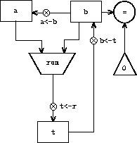
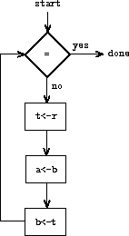

To design a register machine, we must design its data paths(registers and operations) and the controller that sequencesthese operations. To illustrate the design of a simple registermachine, let us examine Euclid's Algorithm, which is used to computethe greatest common divisor (GCD) of two integers. As we saw insection 1.2.5, Euclid's Algorithm can be carried out by an iterativeprocess, as specified by the following procedure:
(define (gcd a b)
(if (= b 0)
a
(gcd b (remainder a b))))
A machine to carry out this algorithm must keep track of two numbers,a and b, so let us assume that these numbers are stored in tworegisters with those names. The basic operations required are testingwhether the contents of register b is zero and computing theremainder of the contents of register a divided by the contentsof register b. The remainder operation is a complex process,but assume for the moment that we have a primitive device thatcomputes remainders. On each cycle of the GCD algorithm, the contentsof register a must be replaced by the contents of register b, and the contents of b must be replaced by the remainder ofthe old contents of a divided by the old contents of b.It would be convenient if these replacements could be donesimultaneously, but in our model of register machines we will assumethat only one register can be assigned a new value at each step. Toaccomplish the replacements, our machine will use a third“temporary” register, which we call t. (First the remainderwill be placed in t, then the contents of b will be placedin a, and finally the remainder stored in t will be placedin b.)
We can illustrate the registers and operations required for thismachine by using the data-path diagram shown infigure 5.1. In thisdiagram, the registers (a, b, and t) are representedby rectangles. Each way to assign a value to a register isindicated by an arrow with an X behind the head, pointing fromthe source of data to the register. We can think of the X as abutton that, when pushed, allows the value at the source to “flow”into the designated register. The label next to each button is thename we will use to refer to the button. The names are arbitrary, andcan be chosen to have mnemonic value (for example, a<-b denotespushing the button that assigns the contents of register b toregister a). The source of data for a register can be anotherregister (as in the a<-b assignment), an operation result (as inthe t<-r assignment), or a constant (a built-in value thatcannot be changed, represented in a data-path diagram by a trianglecontaining the constant).
An operation that computes a value from constants and the contentsof registers is represented in a data-path diagram by a trapezoidcontaining a name for the operation. For example, the box marked rem in figure 5.1 represents anoperation that computes the remainder of the contents of theregisters a and b to which it is attached. Arrows(without buttons) point from the input registers and constants to thebox, and arrows connect the operation's output value to registers.A test is represented by a circle containing a name for the test. Forexample, our GCD machine has an operation thattests whether the contents of registerb is zero. A test also has arrows from its inputregisters and constants, but it has no outputarrows; its value is used by the controller rather than by the datapaths. Overall, the data-path diagram shows the registers andoperations that are required for the machine and how they must beconnected. If we view the arrows as wires and the X buttons asswitches, the data-path diagram is very like the wiring diagram for amachine that could be constructed from electrical components.
|  |
Figure 5.1: Data paths for a GCD machine.
|
In order for the data paths to actually compute GCDs, the buttons mustbe pushed in the correct sequence. We will describe this sequence interms of a controller diagram, as illustrated infigure 5.2. The elements of the controllerdiagram indicate how thedata-path components should be operated. The rectangular boxes in thecontroller diagram identify data-path buttons to be pushed, and thearrows describe the sequencing from one step to the next. The diamondin the diagram represents a decision. One of the two sequencingarrows will be followed, depending on the value of the data-path testidentified in the diamond. We can interpret the controller in termsof a physical analogy: Think of the diagram as a maze in which amarble is rolling. When the marble rolls into a box, it pushes thedata-path button that is named by the box. When the marble rolls intoa decision node (such as the test for b = 0), it leaves thenode on the path determined by the result of the indicated test.Taken together, the data paths and the controller completely describea machine for computing GCDs. We start the controller (the rollingmarble) at the place marked start, after placing numbers inregisters a and b. When the controller reaches done, we will find the value of the GCD in register a.
| 
|
Figure 5.2: Controller for a GCD machine.
|
Exercise 5.1. Design a register machine to compute factorials using the iterativealgorithm specified by the following procedure. Draw data-path andcontroller diagrams for this machine.
(define (factorial n)
(define (iter product counter)
(if (> counter n)
product
(iter (* counter product)
(+ counter 1))))
(iter 1 1))
Data-path and controller diagrams are adequate for representing simplemachines such as GCD, but they are unwieldy for describing largemachines such as a Lisp interpreter. To make it possible to deal withcomplex machines, we will create a language that presents, in textualform, all the information given by the data-path and controllerdiagrams. We will start with a notation that directly mirrors the diagrams.
We define the data paths of a machine by describing the registers andthe operations. To describe a register, we give it a nameand specify the buttons that control assignment to it. We give eachof these buttons a name and specify the source of the data that entersthe register under the button's control. (The source is a register, aconstant, or an operation.)To describe an operation, we giveit a name and specify its inputs (registers or constants).
We define the controller of a machine as a sequence of instructions together with labels that identify entrypoints in the sequence. An instruction is one of the following:
- The name of a data-path button to push to assign a value toa register. (This corresponds to a box in the controller diagram.)
- A
test instruction, that performs a specified test.
- A conditional branch (
branch instruction) to alocation indicated by a controller label, based on the result of theprevious test. (The test and branch together correspond to a diamondin the controller diagram.) If the test is false, the controllershould continue with the next instruction in the sequence. Otherwise,the controller should continue with the instruction after the label.
- An unconditional branch (
goto instruction) naming acontroller label at which to continue execution.
The machine starts at the beginning of the controller instructionsequence and stops when execution reaches the end of the sequence.Except when a branch changes the flow of control, instructions areexecuted in the order in which they are listed.
(data-paths
(registers
((name a)
(buttons ((name a<-b) (source (register b)))))
((name b)
(buttons ((name b<-t) (source (register t)))))
((name t)
(buttons ((name t<-r) (source (operation rem))))))
(operations
((name rem)
(inputs (register a) (register b)))
((name =)
(inputs (register b) (constant 0)))))
(controller
test-b ; label
(test =) ; test
(branch (label gcd-done)) ; conditional branch
(t<-r) ; button push
(a<-b) ; button push
(b<-t) ; button push
(goto (label test-b)) ; unconditional branch
gcd-done) ; label
|
Figure 5.3: A specification of the GCD machine.
|
Figure 5.3 shows the GCD machine described inthis way. This example only hints at the generality of thesedescriptions, since the GCD machine is a very simple case: Eachregister has only one button, and each button and test is used onlyonce in the controller.
Unfortunately, it is difficult to read such a description. In orderto understand the controller instructions we must constantly referback to the definitions of the button names and the operation names,and to understand what the buttons do we may have to refer to thedefinitions of the operation names. We will thus transform ournotation to combine the information from the data-path and controllerdescriptions so that we see it all together.
To obtain this form of description, we will replace the arbitrarybutton and operation names by the definitions of their behavior. Thatis, instead of saying (in the controller) “Push button t<-r”and separately saying (in the data paths) “Button t<-r assignsthe value of the rem operation to register t” and “Therem operation's inputs are the contents of registersa and b,” we will say (in the controller) “Push thebutton that assigns to register t the value of the remoperation on the contents of registers a and b.”Similarly, instead of saying (in the controller) “Perform the = test” and separately saying (in the data paths) “The = test operates on the contents of register b and theconstant 0,” we will say “Perform the = test on thecontents of register b and the constant 0.” We will omit thedata-path description, leaving only the controller sequence. Thus,the GCD machine is described as follows:
(controller
test-b
(test (op =) (reg b) (const 0))
(branch (label gcd-done))
(assign t (op rem) (reg a) (reg b))
(assign a (reg b))
(assign b (reg t))
(goto (label test-b))
gcd-done)
This form of description is easier to read than the kind illustratedin figure 5.3, but it also has disadvantages:
- It is more verbose for large machines,because complete descriptions of the data-path elements are repeatedwhenever the elements are mentioned in the controller instructionsequence. (This is not a problem in the GCD example, because eachoperation and button is used only once.) Moreover, repeating thedata-path descriptions obscures the actual data-path structure of themachine; it is not obvious for a large machine how many registers,operations, and buttons there are and how they are interconnected.
- Because the controller instructions in a machine definitionlook like Lisp expressions, it is easy to forget that they arenot arbitrary Lisp expressions. They can notate only legal machineoperations. For example, operations can operate directly only onconstants and the contents of registers, not on the results of otheroperations.
In spite of these disadvantages, we will use this register-machinelanguage throughout this chapter, because we will be more concerned withunderstanding controllers than with understanding the elements andconnections in data paths. We should keep in mind,however, that data-path design is crucial in designing real machines.
Exercise 5.2. Use the register-machine language to describethe iterative factorial machine of exercise 5.1.
Let us modify the GCD machine so that we can type in the numberswhose GCD we want and get the answer printed at our terminal. We willnot discuss how to make a machine that can read and print, but willassume (as we do when we use read and display in Scheme) thatthey are available as primitive operations.
Read is like the operations we have been using in that itproduces a value that can be stored in a register. But readdoes not take inputs from any registers; its value depends onsomething that happens outside the parts of the machine we aredesigning. We will allow our machine's operations to have suchbehavior, and thus will draw and notate the use of read just aswe do any other operation that computes a value.
Print, on the other hand, differs from the operations we havebeen using in a fundamental way: It does not produce an output valueto be stored in a register. Though it has an effect, this effect isnot on a part of the machine we are designing. We will refer to thiskind of operation as an action. We will represent an action ina data-path diagram just as we represent an operation that computes avalue – as a trapezoid that contains the name of the action.Arrows point to the action box from any inputs (registers orconstants). We also associate a button with the action. Pushing thebutton makes the action happen. To make a controller push an actionbutton we use a new kind of instruction called perform. Thus,the action of printing the contents of register a is representedin a controller sequence by the instruction
(perform (op print) (reg a))
Figure 5.4 shows the data paths and controller forthe new GCD machine. Instead of having the machine stop afterprinting the answer, we have made it start over, so that it repeatedlyreads a pair of numbers, computes their GCD, and prints the result.This structure is like the driver loops we used in the interpreters ofchapter 4.

(controller
gcd-loop
(assign a (op read))
(assign b (op read))
test-b
(test (op =) (reg b) (const 0))
(branch (label gcd-done))
(assign t (op rem) (reg a) (reg b))
(assign a (reg b))
(assign b (reg t))
(goto (label test-b))
gcd-done
(perform (op print) (reg a))
(goto (label gcd-loop)))
|
Figure 5.4: A GCD machine that reads inputs and prints results.
|
We will often define a machine to include “primitive” operations that areactually very complex. For example, in sections 5.4 and5.5 we will treat Scheme's environmentmanipulations as primitive. Such abstraction is valuable because itallows us to ignore the details of parts of a machine so that we canconcentrate on other aspects of the design. The fact that we haveswept a lot of complexity under the rug, however, does not mean that amachine design is unrealistic. We can always replace the complex“primitives” by simpler primitive operations.
Consider the GCD machine. The machine has an instruction that computesthe remainder of the contents of registers a and b andassigns the result to register t. If we want to construct theGCD machine without using a primitive remainder operation,we must specify how to compute remainders in terms of simpleroperations, such as subtraction. Indeed, we can write a Schemeprocedure that finds remainders in this way:
(define (remainder n d)
(if (< n d)
n
(remainder (- n d) d)))
We can thus replace the remainder operation in the GCD machine'sdata paths with a subtraction operation and a comparison test.Figure 5.5 shows the data paths and controllerfor the elaborated machine.The instruction
 |
Figure 5.5: Data paths and controller for the elaborated GCD machine.
|
(assign t (op rem) (reg a) (reg b))
in the GCD controller definition is replaced by a sequence ofinstructions that contains a loop, as shown infigure 5.6.
(controller
test-b
(test (op =) (reg b) (const 0))
(branch (label gcd-done))
(assign t (reg a))
rem-loop
(test (op <) (reg t) (reg b))
(branch (label rem-done))
(assign t (op -) (reg t) (reg b))
(goto (label rem-loop))
rem-done
(assign a (reg b))
(assign b (reg t))
(goto (label test-b))
gcd-done)
|
Figure 5.6: Controller instruction sequence for the GCD machine infigure
5.5.
|
Exercise 5.3. Design a machine to compute square roots using Newton's method, asdescribed in section 1.1.7:
(define (sqrt x)
(define (good-enough? guess)
(< (abs (- (square guess) x)) 0.001))
(define (improve guess)
(average guess (/ x guess)))
(define (sqrt-iter guess)
(if (good-enough? guess)
guess
(sqrt-iter (improve guess))))
(sqrt-iter 1.0))
Begin by assuming that good-enough? and improve operationsare available as primitives. Then show how to expand these in termsof arithmetic operations. Describe each version of the sqrtmachine design by drawing a data-path diagram and writing a controllerdefinition in the register-machine language.
When designing a machine to perform a computation, we would oftenprefer to arrange for components to be shared by different parts ofthe computation rather than duplicate the components. Consider amachine that includes two GCD computations – one that finds the GCD ofthe contents of registers a and b and one that finds theGCD of the contents of registers c and d. We might startby assuming we have a primitive gcd operation, then expand thetwo instances of gcd in terms of more primitive operations.Figure 5.7 shows just the GCD portions of theresulting machine's data paths, without showing how they connect tothe rest of the machine. The figure also shows the correspondingportions of the machine's controller sequence.

gcd-1
(test (op =) (reg b) (const 0))
(branch (label after-gcd-1))
(assign t (op rem) (reg a) (reg b))
(assign a (reg b))
(assign b (reg t))
(goto (label gcd-1))
after-gcd-1
⋮
gcd-2
(test (op =) (reg d) (const 0))
(branch (label after-gcd-2))
(assign s (op rem) (reg c) (reg d))
(assign c (reg d))
(assign d (reg s))
(goto (label gcd-2))
after-gcd-2
|
Figure 5.7: Portions of the data paths and controller sequence fora machine with two GCD computations.
|
This machine has two remainder operation boxes and two boxes fortesting equality. If the duplicated components are complicated, as is theremainder box, this will not be an economical way to build themachine. We can avoid duplicating the data-path components by usingthe same components for both GCD computations, provided that doing sowill not affect the rest of the larger machine's computation. If thevalues in registers a and b are not needed by the time thecontroller gets to gcd-2 (or if these values can be moved toother registers for safekeeping), we can change the machine so thatit uses registers a and b, rather than registers cand d, in computing the second GCD as well as the first. If wedo this, we obtain the controller sequence shown infigure 5.8.
We have removed the duplicate data-path components(so that the data paths are again as in figure 5.1),but the controllernow has two GCD sequences that differ only in their entry-pointlabels. It would be better to replace these two sequences by branchesto a single sequence – a gcd subroutine – at the end ofwhich we branch back to the correct place in the main instructionsequence. We can accomplish this as follows: Before branching to gcd, we place a distinguishing value (such as 0 or 1) into a specialregister, continue. At the end of the gcd subroutine wereturn either to after-gcd-1 or to after-gcd-2, dependingon the value of the continue register.Figure 5.9 shows the relevant portion of theresulting controller sequence, which includes only a single copy of thegcd instructions.
gcd-1
(test (op =) (reg b) (const 0))
(branch (label after-gcd-1))
(assign t (op rem) (reg a) (reg b))
(assign a (reg b))
(assign b (reg t))
(goto (label gcd-1))
after-gcd-1
⋮
gcd-2
(test (op =) (reg b) (const 0))
(branch (label after-gcd-2))
(assign t (op rem) (reg a) (reg b))
(assign a (reg b))
(assign b (reg t))
(goto (label gcd-2))
after-gcd-2
|
Figure 5.8: Portions of the controller sequence for a machine thatuses the same data-path components for two different GCDcomputations.
|
gcd
(test (op =) (reg b) (const 0))
(branch (label gcd-done))
(assign t (op rem) (reg a) (reg b))
(assign a (reg b))
(assign b (reg t))
(goto (label gcd))
gcd-done
(test (op =) (reg continue) (const 0))
(branch (label after-gcd-1))
(goto (label after-gcd-2))
⋮
;; Before branching to gcd from the first place where
;; it is needed, we place 0 in the continue register
(assign continue (const 0))
(goto (label gcd))
after-gcd-1
⋮
;; Before the second use of gcd, we place 1 in the continue register
(assign continue (const 1))
(goto (label gcd))
after-gcd-2
|
Figure 5.9: Using a
continue register to avoidthe duplicate controller sequence in figure
5.8.
|
gcd
(test (op =) (reg b) (const 0))
(branch (label gcd-done))
(assign t (op rem) (reg a) (reg b))
(assign a (reg b))
(assign b (reg t))
(goto (label gcd))
gcd-done
(goto (reg continue))
⋮
;; Before calling gcd, we assign to continue
;; the label to which gcd should return.
(assign continue (label after-gcd-1))
(goto (label gcd))
after-gcd-1
⋮
;; Here is the second call to gcd, with a different continuation.
(assign continue (label after-gcd-2))
(goto (label gcd))
after-gcd-2
|
Figure 5.10: Assigning labels to the
continue register simplifiesand generalizes the strategy shown in figure
5.9.
|
This is a reasonable approach for handling small problems, but itwould be awkward if there were many instances of GCD computations inthe controller sequence. To decide where to continue executing afterthe gcd subroutine, we would need tests in the data paths andbranch instructions in the controller for all the places that use gcd. A more powerful method for implementing subroutines is to havethe continue register hold the label of the entry point in thecontroller sequence at which execution should continue when thesubroutine is finished. Implementing this strategy requires a newkind of connection between the data paths and the controller of aregister machine: There must be a way to assign to a register a labelin the controller sequence in such a way that this value can be fetchedfrom the register and used to continue execution at the designatedentry point.
To reflect this ability, we will extend the assigninstruction of the register-machine language to allow a register to beassigned as value a label from the controller sequence (as a specialkind of constant). We will also extend the goto instruction toallow execution to continue at the entry point described by thecontents of a register rather than only at an entry point described bya constant label. Using these new constructs we can terminate thegcd subroutine with a branch to the location stored in the continue register. This leads to the controller sequence shown infigure 5.10.
A machine with more than one subroutine could use multiplecontinuation registers (e.g., gcd-continue, factorial-continue) or we could have all subroutines share a singlecontinue register. Sharing is more economical, but we must becareful if we have a subroutine (sub1) that calls anothersubroutine (sub2). Unless sub1 saves the contents of continue in some other register before setting up continue forthe call to sub2, sub1 will not know where to go when itis finished. The mechanism developed in the next section to handlerecursion also provides a better solution to this problem of nestedsubroutine calls.
With the ideas illustrated so far, we can implement any iterativeprocess by specifying a register machine that has a registercorresponding to each state variable of the process. The machinerepeatedly executes a controller loop, changing the contentsof the registers, until some termination condition is satisfied. Ateach point in the controller sequence, the state of the machine(representing the state of the iterative process) is completelydetermined by the contents of the registers (the values of the statevariables).
Implementing recursive processes, however, requires an additionalmechanism. Consider the following recursive method for computingfactorials, which we first examined insection 1.2.1:
(define (factorial n)
(if (= n 1)
1
(* (factorial (- n 1)) n)))
As we see from the procedure, computing n! requires computing(n - 1)!. Our GCD machine, modeled on the procedure
(define (gcd a b)
(if (= b 0)
a
(gcd b (remainder a b))))
similarly had to compute another GCD. But there is an importantdifference between the gcd procedure, which reduces the originalcomputation to a new GCD computation, and factorial, whichrequires computing another factorial as a subproblem. In GCD, theanswer to the new GCD computation is the answer to the originalproblem. To compute the next GCD, we simply place the new argumentsin the input registers of the GCD machine and reuse themachine's data paths by executing the same controller sequence. Whenthe machine is finished solving the final GCD problem, it hascompleted the entire computation.
In the case of factorial (or any recursive process) the answer to thenew factorial subproblem is not the answer to the original problem.The value obtained for (n - 1)! must be multiplied by n to get thefinal answer. If we try to imitate the GCD design, and solvethe factorial subproblem by decrementing the n register andrerunning the factorial machine, we will no longer have available theold value of n by which to multiply the result. We thus need asecond factorial machine to work on the subproblem. This secondfactorial computation itself has a factorial subproblem, whichrequires a third factorial machine, and so on. Since each factorialmachine contains another factorial machine within it, the totalmachine contains an infinite nest of similar machines and hence cannotbe constructed from a fixed, finite number of parts.
Nevertheless, we can implement the factorial process as a registermachine if we can arrange to use the same components for each nestedinstance of the machine. Specifically, the machine that computes n!should use the same components to work on the subproblem of computing(n - 1)!, on the subproblem for (n - 2)!, and so on. This isplausible because, although the factorial process dictates that anunbounded number of copies of the same machine are needed to perform acomputation, only one of these copies needs to be active at any giventime. When the machine encounters a recursive subproblem, it cansuspend work on the main problem, reuse the same physical parts towork on the subproblem, then continue the suspended computation.
In the subproblem, the contents of the registers will be differentthan they were in the main problem. (In this case the n registeris decremented.) In order to be able to continue the suspendedcomputation, the machine must save the contents of any registers thatwill be needed after the subproblem is solved so that these can berestored to continue the suspended computation. In the case offactorial, we will save the old value of n, to be restored whenwe are finished computing the factorial of the decremented nregister.
Since there is no a priori limit on the depth of nestedrecursive calls, we may need to save an arbitrary number of registervalues. These values must be restored in the reverse of the order inwhich they were saved, since in a nest of recursions the lastsubproblem to be entered is the first to be finished. This dictatesthe use of a stack, or “last in, first out” data structure, tosave register values. We can extend the register-machine language toinclude a stack by adding two kinds of instructions: Values are placedon the stack using a save instruction and restored from thestack using a restore instruction. After a sequence of valueshas been saved on the stack, a sequence of restores willretrieve these values in reverse order.
With the aid of the stack, we can reuse a single copy of the factorialmachine's data paths for each factorial subproblem. There is asimilar design issue in reusing the controller sequence that operatesthe data paths. To reexecute the factorial computation, thecontroller cannot simply loop back to the beginning, as withan iterative process, because after solving the (n - 1)! subproblemthe machine must still multiply the result by n. The controllermust suspend its computation of n!, solve the (n - 1)! subproblem,then continue its computation of n!. This view of the factorialcomputation suggests the use of the subroutine mechanism described insection 5.1.3, which has the controller use acontinue register to transfer to the part of the sequence thatsolves a subproblem and then continue where it left off on the mainproblem. We can thus make a factorial subroutine that returns to theentry point stored in the continue register. Around each subroutinecall, we save and restore continue just as we do the nregister, since each “level” of the factorial computation will usethe same continue register. That is, the factorial subroutinemust put a new value in continue when it calls itself for asubproblem, but it will need the old value in order to return to theplace that called it to solve a subproblem.
Figure 5.11 shows the data paths and controller fora machine that implements the recursive factorial procedure.The machine has a stack and three registers, called n, val, and continue. To simplify the data-path diagram, we havenot named the register-assignment buttons, only the stack-operationbuttons (sc and sn to save registers, rc and rn to restore registers). To operate the machine, we put in registern the number whose factorial we wish to compute and start themachine. When the machine reaches fact-done, the computation isfinished and the answer will be found in the val register. Inthe controller sequence, n and continue are saved beforeeach recursive call and restored upon return from the call. Returningfrom a call is accomplished by branching to the location stored incontinue. Continue is initialized when the machine startsso that the last return will go to fact-done. The valregister, which holds the result of the factorial computation, is notsaved before the recursive call, because the old contents of valis not useful after the subroutine returns. Only the new value, whichis the value produced by the subcomputation, is needed.Although in principle the factorial computation requires an infinitemachine, the machine in figure 5.11 is actuallyfinite except for the stack, which is potentially unbounded. Anyparticular physical implementation of a stack, however, will be offinite size, and this will limit the depth of recursive calls that canbe handled by the machine. This implementation of factorialillustrates the general strategy for realizing recursive algorithms asordinary register machines augmented by stacks. When a recursivesubproblem is encountered, we save on the stack the registers whosecurrent values will be required after the subproblem is solved, solvethe recursive subproblem, then restore the saved registers andcontinue execution on the main problem. The continue registermust always be saved. Whether there are other registers that need tobe saved depends on the particular machine, since not all recursivecomputations need the original values of registers that are modifiedduring solution of the subproblem (see exercise 5.4).
Let us examine a more complex recursive process, the tree-recursivecomputation of the Fibonacci numbers, which we introduced insection 1.2.2:
(define (fib n)
(if (< n 2)
n
(+ (fib (- n 1)) (fib (- n 2)))))
Just as with factorial, we can implement the recursive Fibonaccicomputation as a register machine with registers n, val,and continue. The machine is more complex than the one forfactorial, because there are two places in the controller sequencewhere we need to perform recursive calls – once to compute Fib(n - 1)and once to compute Fib(n - 2). To set up for each of these calls, wesave the registers whose values will be needed later, set the nregister to the number whose Fib we need to compute recursively (n - 1or n - 2), and assign to continue the entry point in the main sequenceto which to return (afterfib-n-1 or afterfib-n-2,respectively). We then go to fib-loop. When we return from therecursive call, the answer is in val.Figure 5.12 shows the controller sequence for thismachine.

(controller
(assign continue (label fact-done)) ; set up final return address
fact-loop
(test (op =) (reg n) (const 1))
(branch (label base-case))
;; Set up for the recursive call by saving n and continue.
;; Set up continue so that the computation will continue
;; at after-fact when the subroutine returns.
(save continue)
(save n)
(assign n (op -) (reg n) (const 1))
(assign continue (label after-fact))
(goto (label fact-loop))
after-fact
(restore n)
(restore continue)
(assign val (op *) (reg n) (reg val)) ; val now contains n(n - 1)!
(goto (reg continue)) ; return to caller
base-case
(assign val (const 1)) ; base case: 1! = 1
(goto (reg continue)) ; return to caller
fact-done)
|
Figure 5.11: A recursive factorial machine.
|
(controller
(assign continue (label fib-done))
fib-loop
(test (op <) (reg n) (const 2))
(branch (label immediate-answer))
;; set up to compute Fib(n - 1)
(save continue)
(assign continue (label afterfib-n-1))
(save n) ; save old value of n
(assign n (op -) (reg n) (const 1)); clobber n to n - 1
(goto (label fib-loop)) ; perform recursive call
afterfib-n-1 ; upon return, val contains Fib(n - 1)
(restore n)
(restore continue)
;; set up to compute Fib(n - 2)
(assign n (op -) (reg n) (const 2))
(save continue)
(assign continue (label afterfib-n-2))
(save val) ; save Fib(n - 1)
(goto (label fib-loop))
afterfib-n-2 ; upon return, val contains Fib(n - 2)
(assign n (reg val)) ; n now contains Fib(n - 2)
(restore val) ; val now contains Fib(n - 1)
(restore continue)
(assign val ; Fib(n - 1) + Fib(n - 2)
(op +) (reg val) (reg n))
(goto (reg continue)) ; return to caller, answer is in val
immediate-answer
(assign val (reg n)) ; base case: Fib(n) = n
(goto (reg continue))
fib-done)
|
Figure 5.12: Controller for a machine to compute Fibonaccinumbers.
|
Exercise 5.4. Specify register machines that implement each of the followingprocedures. For each machine, write a controller instruction sequenceand draw a diagram showing the data paths.
a. Recursive exponentiation:
(define (expt b n)
(if (= n 0)
1
(* b (expt b (- n 1)))))
b. Iterative exponentiation:
(define (expt b n)
(define (expt-iter counter product)
(if (= counter 0)
product
(expt-iter (- counter 1) (* b product))))
(expt-iter n 1))
Exercise 5.5. Hand-simulate the factorial and Fibonacci machines, using somenontrivial input (requiring execution of at least one recursive call).Show the contents of the stack at each significant point in theexecution.
Exercise 5.6. Ben Bitdiddle observes that the Fibonacci machine's controller sequencehas an extra save and an extra restore, which can beremoved to make a faster machine. Where are these instructions?
A controller instruction in our register-machine languagehas one of the following forms, where each<inputi> is either (reg <register-name>)or (const <constant-value>).
These instructions were introduced insection 5.1.1:
(assign <register-name> (reg <register-name>))
(assign <register-name> (const <constant-value>))
(assign <register-name> (op <operation-name>) <input1> ... <inputn>)
(perform (op <operation-name>) <input1> ... <inputn>)
(test (op <operation-name>) <input1> ... <inputn>)
(branch (label <label-name>))
(goto (label <label-name>))
The use of registers to hold labels was introduced insection 5.1.3:
(assign <register-name> (label <label-name>))
(goto (reg <register-name>))
Instructions to use the stack were introduced insection 5.1.4:
(save <register-name>)
(restore <register-name>)
The only kind of <constant-value> we have seen so far is a number,but later we will use strings, symbols, and lists.For example,(const "abc") is the string "abc",(const abc) is the symbol abc,(const (a b c)) is the list (a b c),and (const ()) is the empty list.